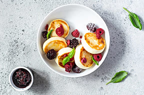
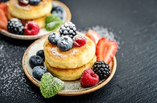
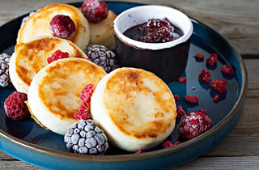
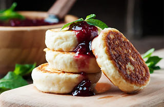

Light and gently sweet cottage cheese pancakes with a golden, crispy crust and a soft,
creamy center. Perfect for breakfast or dessert, they taste amazing with sour cream,
fresh berries, or your favorite jam.

Energy value547 kcal
Proteins25 g
Fats32.3 g
Carbohydrates35.3 g
Sweet cheese pancakes photos



Meet the author of this sweet recipe
Mark Guerrero
Cook's assistant
Mark has been working in a family café for over 7 years and loves
simple, comforting food. His favorite recipes are the ones you can
cook quickly in the morning and still make everyone at the table
happy.
The right choice of cheese is extremely important for this dish. Farmer's cheese will suit best.
Another
alternative is using ricotta or cottage cheese. In this case, the taste and flavor will be slightly
different.
Product name
Quantity
1
Farmer's cheese
2 cups
2
Large eggs
3
3
All-purpose flour
3 cups
4
Flour for dredging
1/2 cup more
5
White sugar
3 tablespoons
6
Salt
Half teaspoon
7
Olive oil
2-3 tablespoons
8
Fresh fruit, jam, or sour cream for topping
To your taste
How to cook sweet cheese pancakes step by step
Before frying, make sure the oil in the skillet is hot. Test it by sprinkling a bit of flour into
the
pan. If it sizzles, the temperature is right.
Step 1
Beat eggs, salt and sugar together in a bowl until smooth.
Step 2
Add flour and farmer's cheese. Mix well until the dough is thick and sticky.
Step 3
Heat a skillet over medium heat, add 2-3 tablespoon oil.
Step 4
Divide dough into portions, form into balls and coat with some flour. With well-floured
hands, flatten slightly to form into discs.
Step 5
Once the oil is hot, place the discs and fry until golden brown, 3-5 minutes each side.
Step 6
Serve with your favorite toppings - jam, sour cream, or fruits and berries.
Helpful tips for perfect pancakes
To make fluffy pancakes, mix the dry and wet ingredients separately, but don't over mix the batter
or
it will become
sticky. Fry in a dry, non-stick frying pan over medium heat until bubbles appear on the surface,
then flip.
Separate mixtures:
Mix all dry ingredients (flour, sugar, baking powder, salt) in one bowl
and all liquid ingredients
(eggs, milk, oil, melted butter) in another.
Don't over mix:
Combine liquid ingredients with dry ingredients, mixing just until combined.
Over mixing will make the
batter sticky.
Consistency:
The batter should be thicker than pancake batter, but not as thick as pancake
batter—it should spread a
little on the pan.
Frying Pan:
Fry the pancakes in a well-heated, dry, non-stick frying pan, taking care not to
burn them.
Temperature:
Start frying on low heat, then increase to medium.
Flipping: Flip the pancake when bubbles appear on the surface.
Oil:
Do not add too much oil. Grease the pan once with butter or oil before frying, or wipe
it with a paper towel.
Tell us how your pancakes turned out
Share your experience with this recipe: what you changed, how it turned out, and what you
served it with. Your feedback helps other home cooks and makes this recipe even better.
4.8
/5 average rating
This recipe is a favorite among our readers: most home cooks praise its
quick preparation, tender texture, and perfectly balanced sweetness.
Try it once and you'll probably add it to your regular breakfast menu.